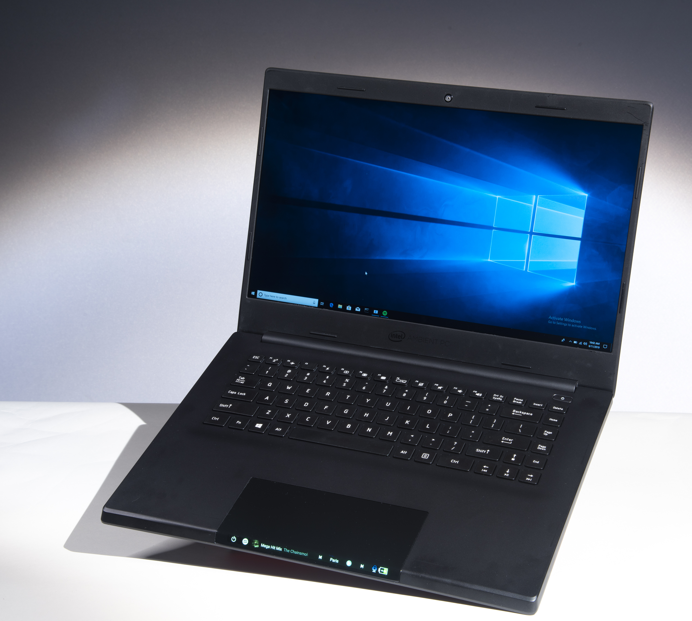
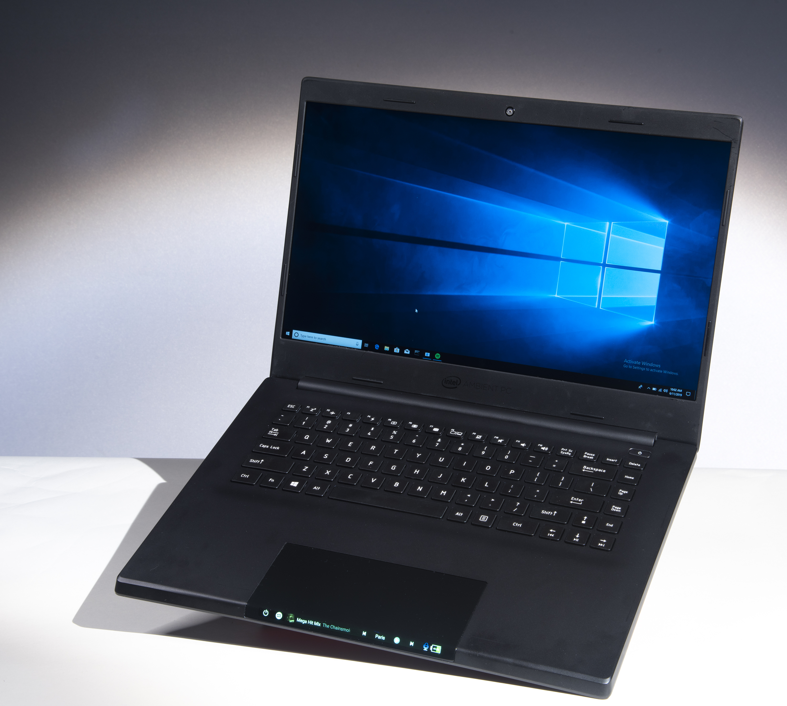

Tensor Compiler & Domain-Specific Language for ML Frameworks
[GitHub Repository]

Contributed to PlaidML, an open-source tensor compiler built on MLIR infrastructure for optimizing machine learning workloads across diverse hardware platforms (NVIDIA, AMD, Intel GPUs/CPUs, Metal). Developed the Tile eDSL—a C++/Python domain-specific language—to interface PlaidML with major ML frameworks including ONNX Runtime, OpenVINO, and TensorFlow.
Key contributions:
- Created the PlaidML execution provider for ONNX Runtime by extending Tile eDSL to support ONNX operations
- Collaborated with AI acceleration hardware teams on hardware-software co-design for efficient inference and training execution
- Worked with University of Washington and Intel Labs to adapt ML optimization techniques for scientific computing workloads, including grid-based surface integrals using wavelet-based finite difference stencils (Yurtoglu et al., ASME J. Comput. Inf. Sci. Eng. 2018)
Example application: Surface integrals via level-set methods using wavelet-based finite difference stencils.
Face Recognition Module for Intelligent PC Platform
 

Images © Intel Corporation. Source: Intel COMPUTEX 2019 Press Materials
Developed a face-recognition module for Intel's ambient computing concept platform, demonstrated at COMPUTEX 2019. The system used a 360° camera to identify users and dynamically adjust the device interface: when closed, recognized users were presented with contextual information on an auxiliary touchbar display; when opened, the system authenticated and logged users into the primary OS.
Implementation involved cross-OS communication, real-time inference integration, and synchronization between device drivers, camera pipelines, and UI subsystems—requiring performance-sensitive, reliability-critical software design for a dual-OS shared peripheral architecture.